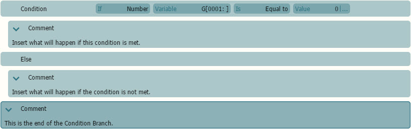
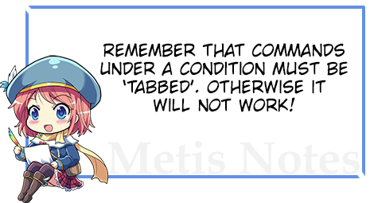
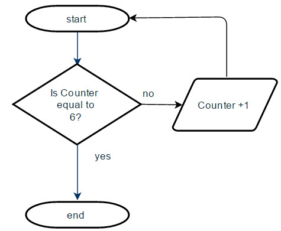
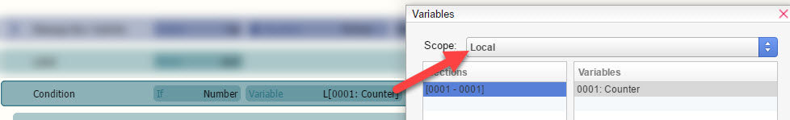
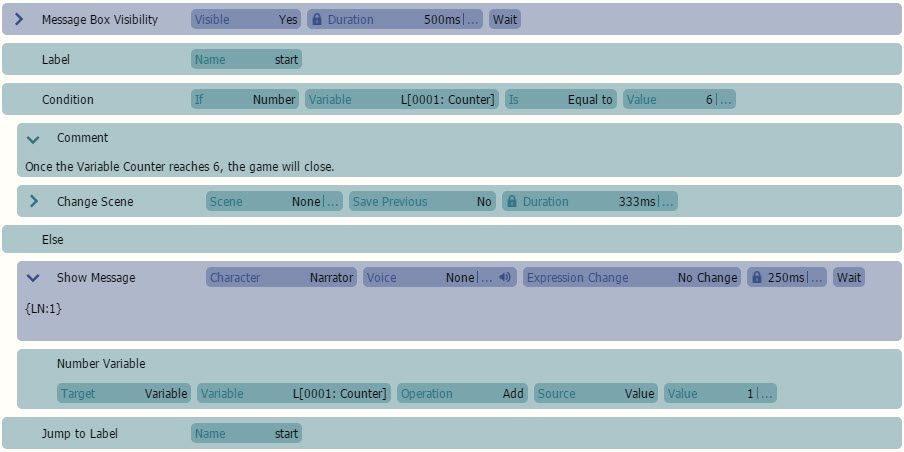
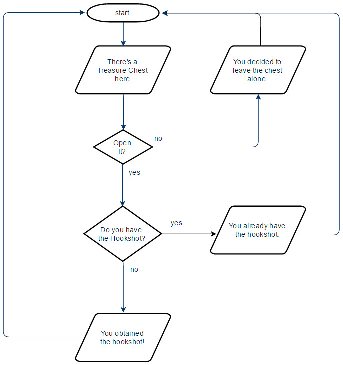
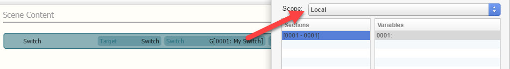
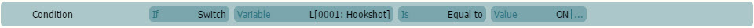
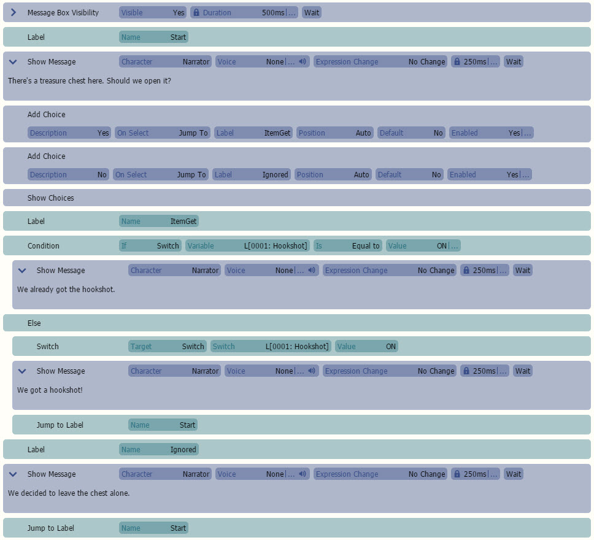

HTML
Topic Fixer
条件是您将使用的最常用的命令之一。它们用于建立触发事件的目标和/或规则。您也可以将其理解为“如果某事做了这个，那么就会发生这个。否则，将会发生这个。”在场景内容格式中，它看起来像这样：如果您仍然感到困惑，没关系！我们强烈建议您阅读流程图以了解它们的结构。以下是一些教程链接：

终极流程图指南
示例 #1：一个简单的计数器

在本教程中，我们将做一个相当简单的例子来说明如何使用条件命令。在本教程中，我们将使用一个
数字变量。首先，让我们看看这个流程图：根据它的阅读方式，流程图遵循逻辑：如果计数器等于 6，则过程将结束。否则，将计数器加 1 并再次检查。

所以我们需要在 VNMaker 中翻译它，如下所示：
让我们添加
- 消息框可见性命令并将其设置为“可见”。这样我们就可以使用“显示消息”命令来显示我们正在使用的变量的值。创建一个
- 标签名为“start”。添加
- 基本->条件命令。 单击变量命令并将范围更改为“本地”。之后，将其值更改为 6。之后，让我们添加 基本
- ->空闲 命令。这将暂停场景，表明条件已达成。假设该命令没有任何制表符，您可以通过按右箭头（ ）键将命令放在条件下方。如果您不小心制表过多，只需按左箭头（）键。让我们添加基本
- ->否则 命令。这将允许我们在第一个条件未满足时放置另一个条件。接下来，我们将使用一个 显示消息
- 并使用一个 文本代码 ，{LN:1}。这意味着本地数字变量 #1 中的任何值都将在“显示消息”命令中显示。之后，我们将使用一个数字变量
- 并将变量范围设置为“本地数字 #1”。将操作设置为“添加”，源设置为“值”。最后将值设置为 1。 在命令的末尾，添加一个 跳转到标签

- 到“start”，并确保它没有制表。 如果一切正确，它应该看起来像这样。 如果使用“播放测试”，您将看到数字递增到五。我们做了一个简单的计数器！
示例 #2：打开宝箱

在下一个例子中，我们将创建一个小的文本提示，询问我们是否想打开一个宝箱。如果您已经打开了箱子，它会给出不同的响应。在本教程中，我们将使用一个
开关
。以下是一个简短的流程图，解释了它的工作原理：照常，让我们添加消息框可见性

- 命令并将其设置为“可见”。由于这是该场景特有的物品，我们可以安全地使用一个本地开关
- 。这意味着该开关仅在该特定场景中可用。所以让我们单击“开关”部分并将范围更改为“本地”。然后将开关命名为“Hookshot”之类的内容，然后按“确定”。创建一个

- 标签
- 名为“start”。然后让我们添加一个显示消息
- ，内容为“这里有一个宝箱。我们要打开它吗？”现在让我们添加两个添加选项
- ，分别显示“是”和“否”。不要忘记在最后添加“显示选项”。对于“是”选项，我们将使用标签 ItemGet
- 。对于“否”选项，我们将使用标签 Ignored。现在，我们应该添加一个名为 ItemGet
- 的标签。 Put 一个条件命令在它下面。确保条件
- 的“如果”设置为“开关”、“本地开关 #1”并等于“ON”。让我们添加一个显示消息

- ，内容为“我们已经拿到了钩子枪。”之后，我们将添加一个否则
- 命令。由于我们之前制作了一个开关，让我们将开关拖到“否则”命令下方。L
- et's add a
- 显示消息，内容为“我们得到了钩子枪！”然后我们将添加一个跳转到标签
- 名为 Start。到最后，我们的场景内容应该看起来像这样：HTML
- 过渡和场景切换
